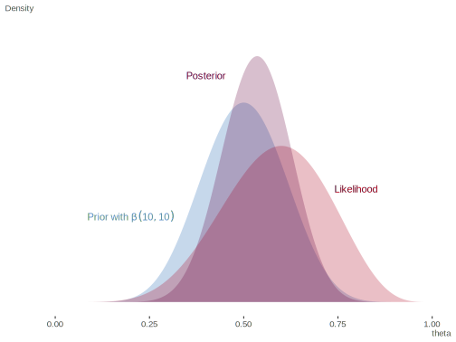
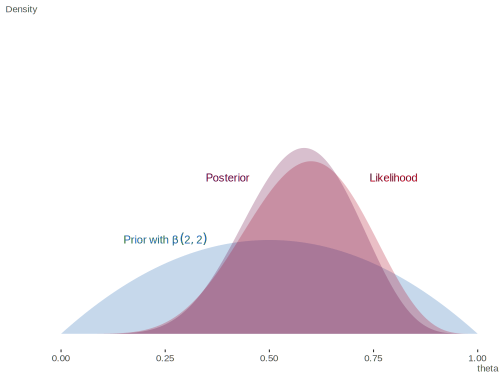
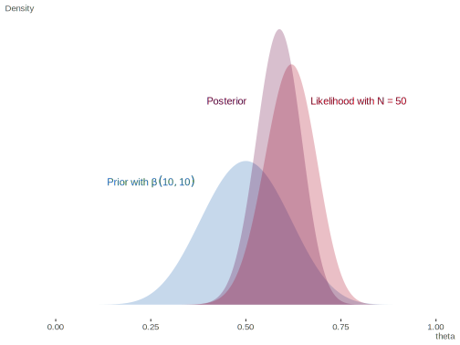
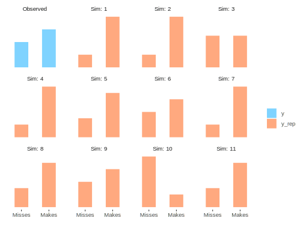

Basics
Prior, likelihood, & posterior distributions
The following is an attempt to provide a small example to show the connection between prior distribution, likelihood and posterior distribution. It is taken directly from my document with mostly just cleaned up code and visualization.
Let’s say we want to estimate the probability that a soccer/football player will score a penalty kick in a shootout. We will employ the binomial distribution to model this. Our goal is to estimate a parameter \(\theta\), the probability that the random knucklehead from your favorite football team will score the penalty in an overtime shootout. Let’s say that for this match it takes 10 shots per team before the game is decided.
We can represent the following data for your team as follows, as well as set up some other things for later.
shots = c('goal','goal','goal','miss','miss',
'goal','goal','miss','miss','goal')
# convert to numeric, arbitrarily picking goal = 1, miss = 0
shots_01 = as.numeric(shots == 'goal')
N = length(shots) # sample size
n_goals = sum(shots == 'goal') # number of shots made
n_missed = sum(shots == 'miss') # number of those missRecall the binomial distribution where we specify the number of trials for a particular observation and the probability of an event. Let’s look at the distribution for a couple values for \(\theta\) equal to .5 and .85, and \(N=10\) observations. We will repeat this 1000 times.
set.seed(1234)
x1 = rbinom(1000, size = 10, p = .5)
x2 = rbinom(1000, size = 10, p = .85)
mean(x1)[1] 5.043qplot(x1, geom = 'histogram')mean(x2)[1] 8.569qplot(x2, geom = 'histogram')The histograms are not shown, but we can see the means are roughly around \(N*p\) as we expect with the binomial.
Prior
For our current situation, we don’t know \(\theta\) and are trying to estimate it. We will start by supplying some possible values. To keep things simple, we’ll only consider 10 values that fall between 0 and 1.
theta = seq(from = 1/(N + 1),
to = N/(N + 1),
length = 10)For the Bayesian approach we must choose a prior distribution representing our initial beliefs about the estimates we might potentially consider. I provide three possibilities, and note that any one of them would work just fine for this situation. We’ll go with a triangular distribution, which will put most of the weight toward values around \(.5\). While we will only work with one prior, do play with the others.
### prior distribution
# triangular as in Kruschke text example
p_theta = pmin(theta, 1 - theta)
# uniform
# p_theta = dunif(theta)
# beta prior with mean = .5
# p_theta = dbeta(theta, 10, 10)
# Normalize so that values sum to 1
p_theta = p_theta / sum(p_theta) So, given some estimate of \(\theta\), we have a probability of that value based on our chosen prior.
Likelihood
Next we will compute the likelihood of the data given some value of \(\theta\). Generally, the likelihood for some target variable \(y\), with observed values \(i \dots n\), given some (set of) parameter(s) \(\theta\), can be expressed as follows:
\[p(y|\theta) = \prod_{i}^{n} p(y_i|\theta)\]
Specifically, the likelihood function for the binomial can be expressed as:
\[p(y|\theta) = {N \choose k}\, \theta^k\, (1-\theta)^{N-k}\]
where \(N\) is the total number of possible times in which the event of interest could occur, and \(k\) number of times the event of interest occurs. Our maximum likelihood estimate in this simple setting would simply be the proportion of events witnessed out of the total number of samples. We’ll use the formula presented above. Technically, the first term is not required, but it serves to normalize the likelihood as we did with the prior.
p_data_given_theta = choose(N, n_goals) * theta^n_goals * (1-theta)^n_missedPosterior
Given the prior and likelihood, we can now compute the posterior distribution via Bayes theorem. The only thing left to calculate is the denominator from Bayes theorem, then plug in the rest.
p_data = p_data_given_theta*p_theta # marginal probability of the data
p_theta_given_data = p_data_given_theta*p_theta / sum(p_data) # Bayes theoremNow let’s examine what all we’ve got.
| theta | prior | likelihood | posterior |
|---|---|---|---|
| 0.091 | 0.033 | 0.000 | 0.000 |
| 0.182 | 0.067 | 0.003 | 0.002 |
| 0.273 | 0.100 | 0.024 | 0.018 |
| 0.364 | 0.133 | 0.080 | 0.079 |
| 0.455 | 0.167 | 0.164 | 0.203 |
| 0.545 | 0.167 | 0.236 | 0.293 |
| 0.636 | 0.133 | 0.244 | 0.242 |
| 0.727 | 0.100 | 0.172 | 0.128 |
| 0.818 | 0.067 | 0.069 | 0.034 |
| 0.909 | 0.033 | 0.008 | 0.002 |
Starting with the prior column, we can see that with the triangular distribution, we’ve given most of our prior probability to the middle values with probability tapering off somewhat slowly towards either extreme. The likelihood, on the other hand, suggests the data is most likely for \(\theta\) values .55-.64, though we know the specific maximum likelihood estimate for \(\theta\) is the proportion for the sample, or .6. Our posterior estimate will therefore fall somewhere between the prior and likelihood estimates, and we can see it has shifted the bulk of the probability slightly away from the most likely values suggested by the prior distribution, and towards a \(\theta\) value suggested by the data of .6.
Let’s go ahead and see what the mean is:
posterior_mean = sum(p_theta_given_data*theta)
posterior_mean[1] 0.5623611So, we start with a prior centered on a value of \(\theta=.5\), add data whose ML estimate is \(\theta=.6\), and our posterior distribution suggests we end up somewhere in between.
We can perhaps understand this further via the following visualizations. In each of these the prior is represented by the blue density, the likelihood by the red, and the posterior by purple. This first is based on a different prior than just used in our example, and instead employs the beta distribution noted among the possibilities in the code above. The beta distribution is highly flexible, and with shape parameters \(\mathcal{A}\) and \(\mathcal{B}\) set to 10 and 10 we get a symmetric distribution centered on \(\theta = .5\). This would actually be a somewhat stronger prior than we might normally want to use, but serves to illustrate a point. The mean of the beta is \(\frac{\mathcal{A}}{\mathcal{A}+\mathcal{B}}\), and thus has a nice interpretation as a prior based on data with sample size equal to \(\mathcal{A}+\mathcal{B}\). The posterior distribution that results would have a mean somewhere between the maximum likelihood value and that of the prior. With the stronger prior, the posterior is pulled closer to it.

The second utilizes a more diffuse prior of \(\beta(2,2)\). The result of using the vague prior is that the likelihood gets more weight with regard to the posterior. In fact, if we used a uniform distribution, we would essentially be doing the equivalent of maximum likelihood estimation. In that sense, many of the commonly used methods that implement maximum likelihood can be seen as a special case of a Bayesian approach.

The third graph employs the initial \(\beta(10,10)\) prior again, but this time we add more observations to the data. This serves to give more weight to the likelihood, which is what we want. As scientists, we’d want the evidence, i.e. data, to eventually outweigh our prior beliefs about the state of things the more we have of it.

For an interactive demonstration of the above, see this.
Posterior predictive
At this point it is hoped you have a better understanding of the process of Bayesian estimation. Conceptually, one starts with prior beliefs about the state of the world and adds evidence to one’s understanding, ultimately coming to a conclusion that serves as a combination of evidence and prior belief. More concretely, we have a prior distribution regarding parameters, a distribution regarding the data given those parameters, and finally a posterior distribution that is the weighted combination of the two.
However, there is yet another distribution of interest to us- the posterior predictive distribution. Stated simply, once we have the posterior distribution for \(\theta\), we can then feed (possibly new or unobserved) data into the data generating process and get distributions for \(\tilde{y}\). Where \(\tilde{y}\) can regard any potential observation, we can distinguish it from the case where we use the current data to produce \(y^{\textrm{Rep}}\), i.e. a replicate of \(y\). For example, if a regression model had predictor variables \(X\), the predictor variables are identical for producing \(y^{\textrm{Rep}}\) as they were in modeling \(y\). However, \(\tilde{y}\) might be based on any values \(\tilde{X}\) that might be feasible or interesting, whether actually observed in the data or not. Since \(y^{\textrm{Rep}}\) is an attempt to replicate the observed data based on the parameters \(\theta\), we can compare our simulated data to the observed data to see how well they match.
We can implement the simulation process with the data and model at hand, given a sample of values of \(\theta\) drawn from the posterior. I provide the results of such a process with the following graph. Each bar graph of frequencies represents a replication of the 10 shots taken, i.e. \(y^{\textrm{Rep}}\), given an estimate of \(\theta\) from the posterior distribution (16 total). These are eleven plausible sets of 10 makes and misses, given \(\theta\) shown against the observed.
library(rstanarm)
shotres = stan_glm(
shots_01 ~ 1,
data = data.frame(shots_01),
family = 'binomial',
iter = 500,
warmup = 250,
prior = student_t()
)
# pp_check(shotres)
With an understanding of the key elements of Bayesian inference in hand, we can proceed to more complex settings.
Source
Original code available at: https://m-clark.github.io/bayesian-basics/example.html